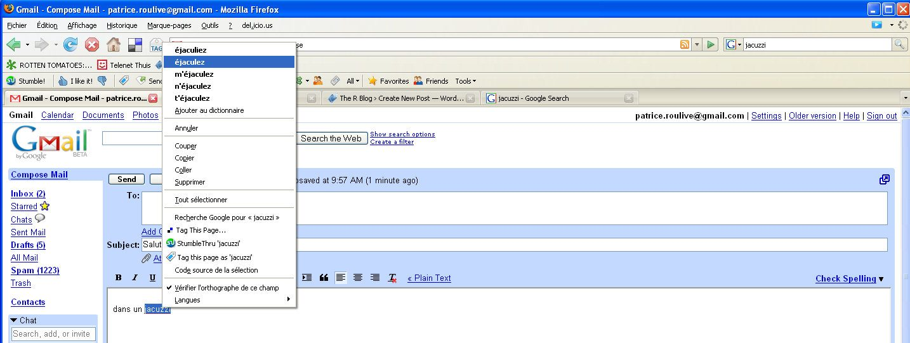

Internet & tech La correction orthographique très sexuelle de Firefox April 11, 2008Internet & techFun This post was originally written in French. Je n'en dis pas plus.  Comments 3Dimitri, 2008-04-11 02:12 Je crois que c'est plutôt le dictionnaire de Firefox qui est en cause :-) patrice.roulive, 2008-04-11 02:25 Right, je corrige mon titre ;-) Antoine, 2008-04-12 06:42 Ca valait bien un post ;) Previous postQuelle révolution: Itunes, premier distributeur de musiqueNext postPeter Callesen exhibition

Comments 3
Dimitri, 2008-04-11 02:12
Je crois que c'est plutôt le dictionnaire de Firefox qui est en cause :-)
patrice.roulive, 2008-04-11 02:25
Right, je corrige mon titre ;-)
Antoine, 2008-04-12 06:42
Ca valait bien un post ;)